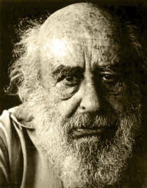

En la decada del 40, el enfoque Gestáltico se inicia con Frederick Perls, quien intenta integrar los hallazgos de varias teorías, todas fecundas en aportes que iluminan la naturaleza humana desde distintos ángulos.
Desde su primera obra: «Yo, hambre y agresión» escrita en 1943, hasta el «Enfoque Gestáltico» que data de 1966, Perls fue integrando aportes del Psicoanálisis, la Fenomenología , el Existencialismo, las Filosofías de Oriente y la Teoría de la Forma. Esta última, surgida alrededor de 1925 incide fuertemente en las ideas de F. Perls y de Laura Perls, su esposa, pionera ella también en esta concepción terapéutica.
El eje conductor de este enfoque, nutrido con nuevas ideas por Perls y otros profesionales a lo largo del tiempo, es contribuir al desarrollo de las potencialidades de las personas aumentando su capacidad de autoconocimiento y autoasistencia. La característica de esta nueva teoría es una modalidad que apela a la noción y a la vivencia de totalidad y completud para observar, tanto el comportamiento como el suceder intrapsíquico.
Con las palabras de Perls,: «…contempla al ser humano, tal cual es, como un todo y examina su comportamiento tal cual se manifiesta en el nivel aparente de la actividad física, y en el nivel inaparente de la actividad mental» y continúa: «Si la actividad física y la actividad mental son del mismo orden, podemos observarlas ambas como manifestaciones de lo mismo: el ser del Hombre».·
El Enfoque Gestáltico no es meramente ecléctico, su cuerpo teórico y de aplicación resulta de un estudio crítico de las teorías precedentes. Está en constante renovación, enriqueciendo su visión del ser humano por ejemplo ,con nuevas propuestas ofrecida por la física moderna en torno al tema materia-energía y aportes antropológicos que estudian las concepciones del ser y de la realidad en culturas pre-modernas.
Observa al hombre en relación con su ambiente y amplía concéntricamente su visión del mismo hacia lo universal; por eso se interesa en los avances de la Psicología Transpersonal que experimenta en los estados de conciencia y reflexiona sobre la naturaleza esencial del ser desde puntos de vista no habituales.

Friedrich Salomon Perls conocido como Fritz Perls, médico neuropsiquiatra y psicoanalista, fue el creador, junto con su esposa, Laura Posner, de la Terapia Gestalt
El quehacer psicológico trata de acrecentar la salud mental disminuída por la inserción de los seres humanos en la sociedad industrializada, por las frustración de la educación autoritaria y por la violencia, entre otros factores. El enfoque gestáltico responde a esta inquietud insistiendo en que al aumentar la capacidad de descubrimiento en cada persona, ésta aprenderá a recuperar la salud perdida. En el camino del autoconocimiento, aprendizaje y salud se encuentran en directa relación.
Propone, desde su acento en el crecimiento, que el paciente no sea «paciente» sino «activo». Las dicotomías “curador-herido”; «activo-pasivo”, «terapeuta-paciente», comenzarán por integrarse tanto en el terapeuta como en el consultante. Sólo así el psicoterapeuta podrá ubicarse, como lo requiere esta práctica, como un testigo y un guía, y organizar una relación donde los conocimientos profesionales no le confieren un puesto de mando sino un lugar de colaborador.
Su visión de la estructura de la personalidad es en términos de centro y periferia. El hombre enfermo ha perdido su centro y se ha instalado crónicamente en su periferia. Sus capacidades y contenidos yoicos se han distanciado de su «si mismo», de los datos primordiales de su naturaleza , y, como consecuencia, de sus necesidades. Su conciencia ha disminuido en su funcionamiento, ha perdido la capacidad de acceder a la información profunda y de aumentarla con los datos provenientes de la periferia.
Para restaurar esta función conciente en cada encuentro terapéutico, es que el psicólogo estimula a quien lo consulta para que obtenga la mayor intensidad vivencial y la mayor claridad de comprensión. El acento en el «ahora», propio de este enfoque, hace que revivir una situación, traerla nuevamente al presente, sea un recurso preferido respecto del relato. Captar lo que acontece en el momento «darnos cuenta de que nos damos cuenta», como enuncia Perls, requiere recursos drámáticos, plásticos y de movimento. El terapeuta se detiene también en la observación de los gestos y en las inflexiones de la voz y propone la utilización de la fantasía y el reconocimiento sensorial a fin de poner al sujeto en contacto con la sabiduría de su propio sufrimiento.
La indagación de los sueños se beneficia con la autoexploración dramática. Los elementos del sueño, sean personas o cosas, serán desplegados sucesivamente:«Sueño que cruzo la plaza y entro a una tienda; me llama la atención una tela afelpada…» Desde este abordaje en tanto cada parte lo es de un todo y es desde ese todo que adquiere sentido, lo mejor será que yo, la soñante, ilumine ese sentido oculto y «sea» la tela afelpada; y «sea» la plaza y «sea» la soñante misma.
René Magritte, Décalcomanie, 1966.
La Psicología de la Forma señala que el campo perceptivo es esencialmente un campo de acción y que la acción es capaz de discernir o promover cambios en él. Se trata entonces, a través de la acción, de aumentar y afinar la percepción de la intimidad del que indaga su acontecer profundo. Esta mayor convergencia de emoción y conocimiento no se promueve con exigencia, por el contrario, se llega por un camino cuyo espíritu coincide con el principio de pregnancia sostenido por la Gëstalt Theorie: «Todo campo psicológico se halla en un momento determinado tan bien organizado como lo permitan las condiciones generales».
La aplicación de este principio es de gran significación, ya que desiste de los preconceptos y del encasillamiento dogmático de lo que se observa. Se avanza y se retrocede con el paciente, ofreciéndole estímulos que el metabolizará «como lo permitan las condiciones generales».
Las trabas del desarrollo personal se encuentran íntimamente vinculadas a las gestalten o formas que no logran su completud, a los «asuntos inconclusos» de los que habló Perls y que una y otra vez resurgen para lograr su cierre.
Hacerse lúcido para captar el error que impide el cierre es parte de la tarea que se le propone al consultante. Para ello comprender cómo ocurre, más que detenerse en la anécdota es esencial, es decir que el proceso y su captación proveerán la lucidez necesaria más que el detalle anecdótico. La exploración minuciosa a través de la identificación y caracterización de los personajes internos y sus relaciones, llevará a recuperar una valiosa capacidad: la discriminación, con ella podrá el consultante develar el conflicto inherente a la relación de sus aspectos interiores, también le permitirá recapacitar sobre lo introyectado ya carente de vigencia y le dará la oportunidad de «re-poner» en la corriente de la conciencia las emociones postergadas.
Las oposiciones esenciales «ser-hacer», «femenino-masculino», «mente-cuerpo» y otras acuñadas en el proceso de cada ser, serán observadas hasta comprender que lo opuesto no engendra necesariamente antagonismo. Habrá que discriminar sobre el valor funcional de estos opuestos, para que recuperen la armonía natural que los torna complementarios. Esta integración es posible cuando cada parte tiene su lugar en un todo, ya que sólo por el todo cada parte es inteligible. Como señaló W. Kohler, el «error de experiencia» consiste en tomar la parte por el todo, lo que genera sufrimiento.
El Enfoque Gestáltico insiste en que la tarea se lleve a cabo con una disposición de confianza en la capacidad del paciente para recuperar su autonomía, y en que hemos de alentarla. Si esta actitud de confianza faltare en el terapeuta gestáltico, sus recursos serán una colección de instrumentos sin mayor sentido, cuyos resultados podrán desmoronarse prontamente.
Pero finalmente: ¿hacia donde marchan estos recursos terapéuticos, cúal es su objetivo? Con la palabras de F. Perls: » El objetivo de la terapia debe ser entonces darle al paciente los medios por los cuales pueda resolver sus problemas actuales y cualquiera que pudiera surgir mañana o en el futuro. Esa herramienta es el autoapoyo. Si logra darse cuenta plenamente en todo instante de si mismo y, de sus acciones en todos los niveles de la fantasía, verbal y físico, podrá ver como produce sus propias dificultades «·
El intento del Enfoque Gestáltico es darle a las personas un instrumento para aumentar su autoconocimiento y realizar nuevas síntesis existenciales.
Lic. Myriam Sas de Guiter